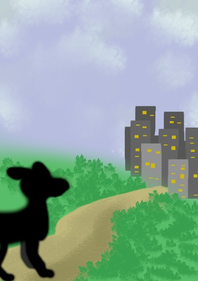
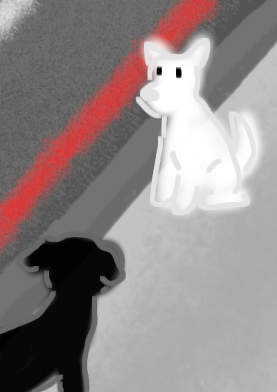
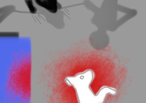
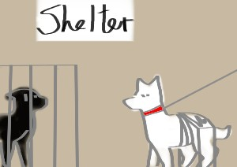

(3).gif) Charlize
Charlize
Dog-story
Doby was a big stray dog who lived in the mountains. Every night, he looked at the bright lights of the city far away and believed the city was full of food, warm homes, and kind people. Even though older animals warned him about the dangers, Doby still decided to leave the mountains and go to the city. When he first arrived, he was amazed by the tall buildings, busy streets, and the smell of food everywhere. He thought his dream had finally come true.

Very quickly, Doby learned that city life was difficult. On his first night, a group of big black stray dogs attacked him because they hated outsider dogs. Later, Doby met a smart stray dog named White who had survived in the city for many years. Like his name, he is a white mix with black dots on his back. White helped Doby find food and safe places to sleep. Every day became harder because there was little food, dangerous streets, and many people who hated stray animals and chased them away.

On a rainy day, White and Dobby walk out the alley they’ve been staying in and go out for food. When white tries to go through a street, a car crashes into him. Nobody stopped to help the injured dog, and this shocked Doby deeply. Soon after, Doby became very hungry and found meat near a dumpster. Without knowing it was poisoned, he ate it. The poison made him very weak, and he collapsed alone on the street. At that moment, Doby no longer believed the city was the beautiful place he once imagined.

Luckily, some people found Doby before he died and brought him to an animal shelter. There, he finally had food, clean water, and medical care. Doby also met White Mix again at the shelter. After some time, a kind family adopted White Mix, and seeing his friend leave with a loving home gave Doby hope. Even after all the pain he experienced, Doby still believed that one day someone might adopt him and give him a real home too.
